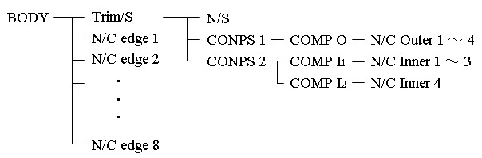
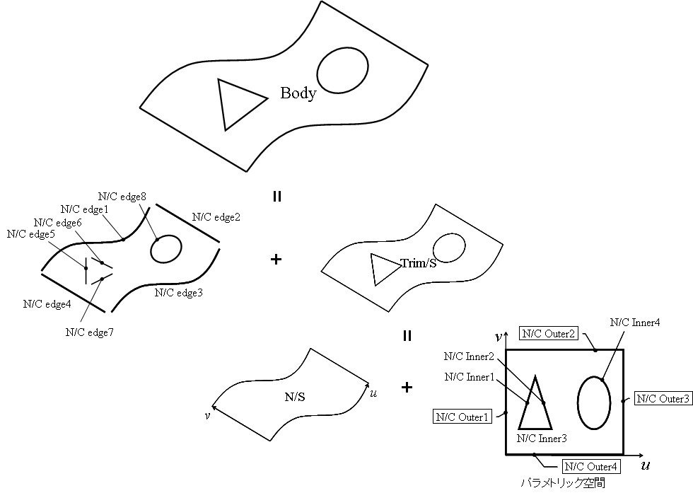

|
|
|
Prev
Index
Next |
Kodatuno内部でのCADデータの構成
Kodatunoへ取り込まれた3D-CADデータ(BODY)は，JAMA-IS(Ver. 1.04)に準拠した階層構造をによって表現，保持されます． 下図は内側に2つのトリム面を持つ曲面(BODY)がKodatuno内部でどのように表現されているのかを示した例です．
BODYはまずエッジを表すNURBS曲線群(N/C edge*)とトリムを持つNURBS曲面(Trim/S)の2種類に分けられます． Trim/Sはさらに，トリム前のNURBS曲面(N/S)と，そのN/Sのパラメトリック空間内でトリムを構成するNURBS曲線群(N/C Outer/Inner*) に分けられています．N/C Inner*はN/Sの内周をトリムするNURBS曲線群を表しています．今回の例では，2つの内周トリムが存在しており， これらはそれぞれ複合曲線(COMP I*)と呼ばれる構造体に格納されています．更に，COMP I*は面上線(CONPS 2)の構成要素として表現されています． また，N/C Outer*はN/Sの外周トリムを構成するNURBS曲線群を表しています．（今回の例の場合は，N/Sの外周と一致しています．） N/C Outer*もN/C Inner*と同様，複合曲線(COMP O)，更に面上線(CONPS 1)に格納されています．
BODYを構成するオブジェクトの実際の構造体による表現は3.8 CADデータの内部表現 を参照してください．  ［BODYの階層構造］
| Copyright(C) Kodatuno Development Team, 2011 | Last modified: Nov. 11, 2011 |